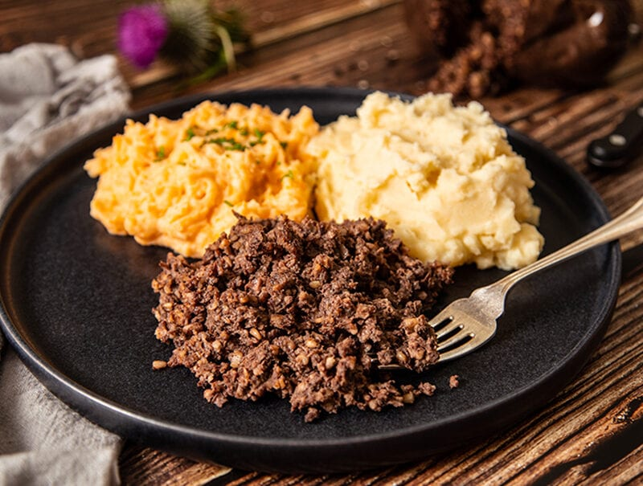

Known in full as bashed neeps and chappit tatties - mashed swedes and chopped potatoes, respectively - this simple vegetable side dish is a true Scottish classic. Either steamed or boiled until tender, only separately, both the swedes and potatoes are seasoned with merely salt and white pepper, though some might add a dash of nutmeg as well.
Meal prep time : 2 hour 15 minutes
Servings : 8